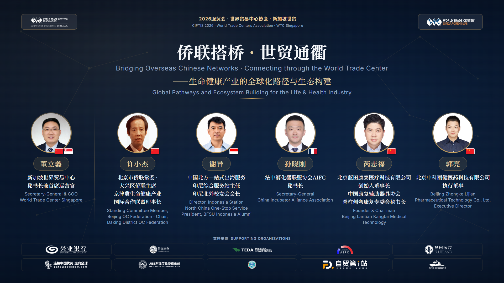
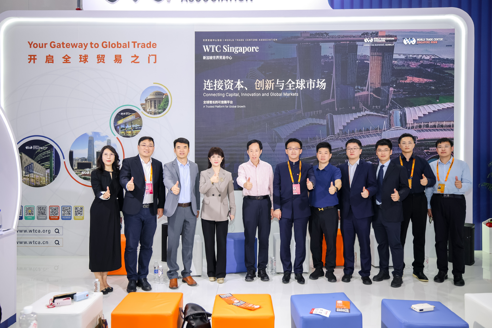
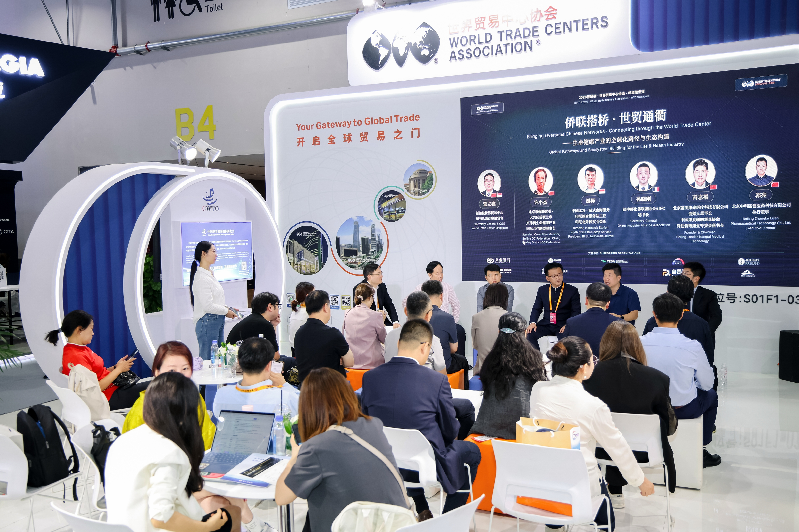
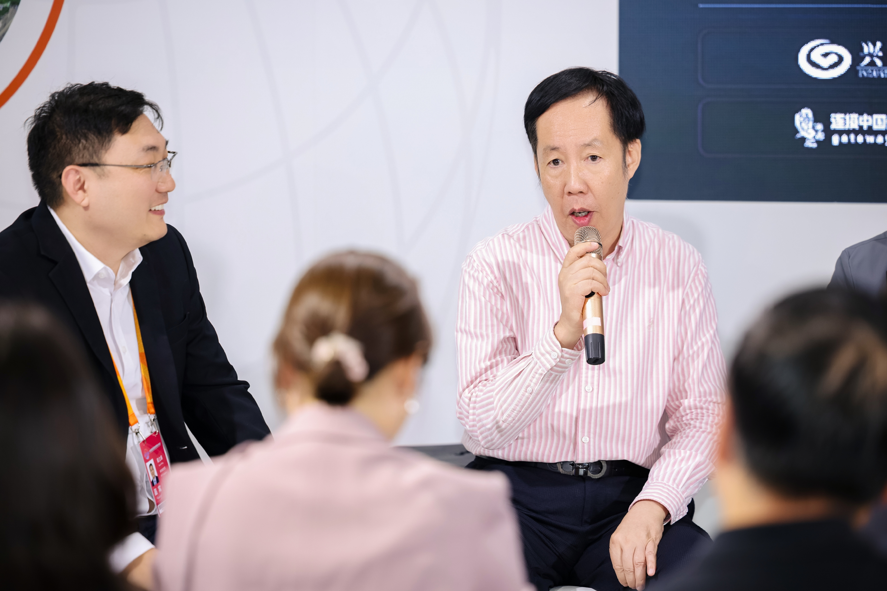
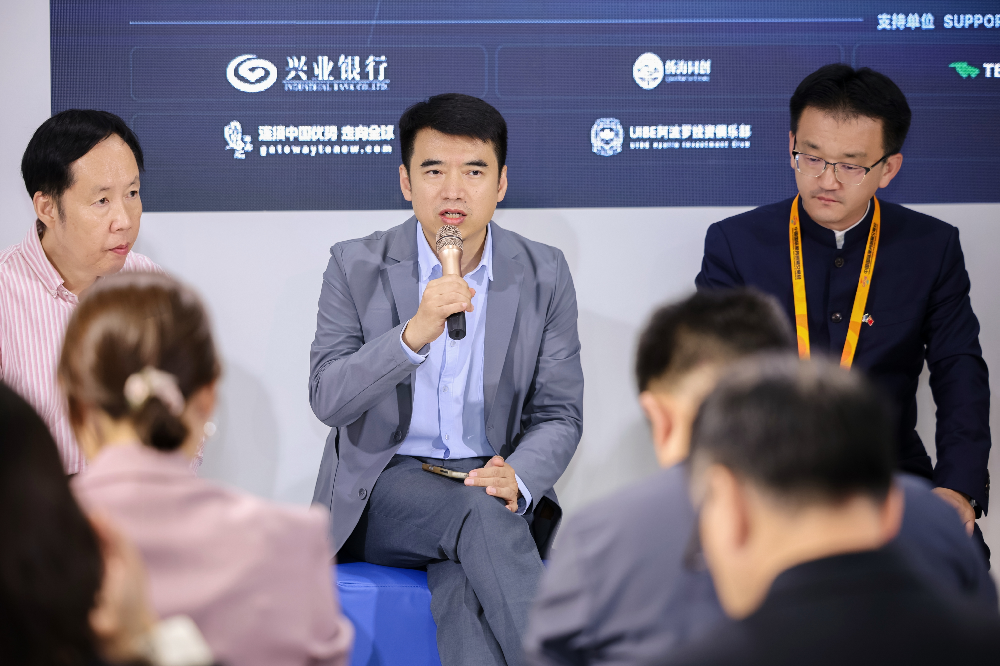
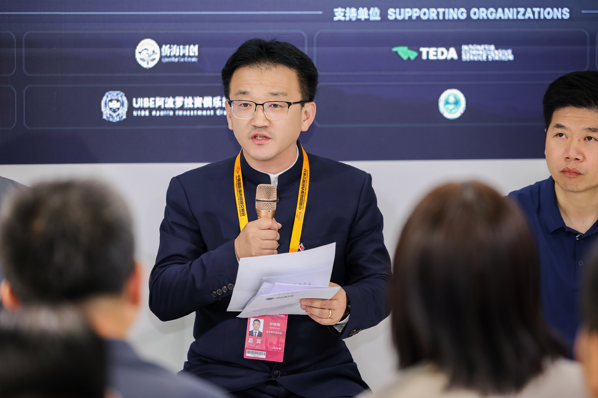
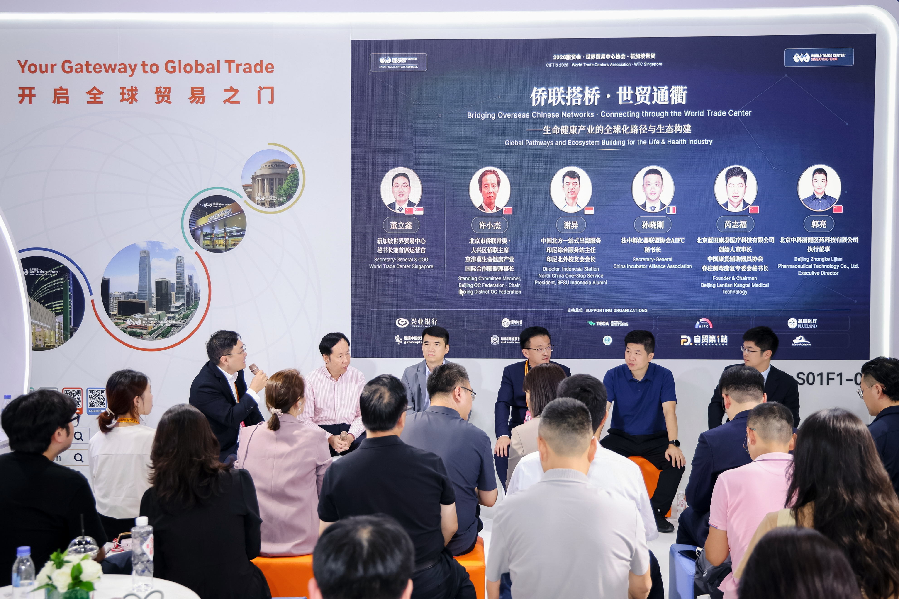
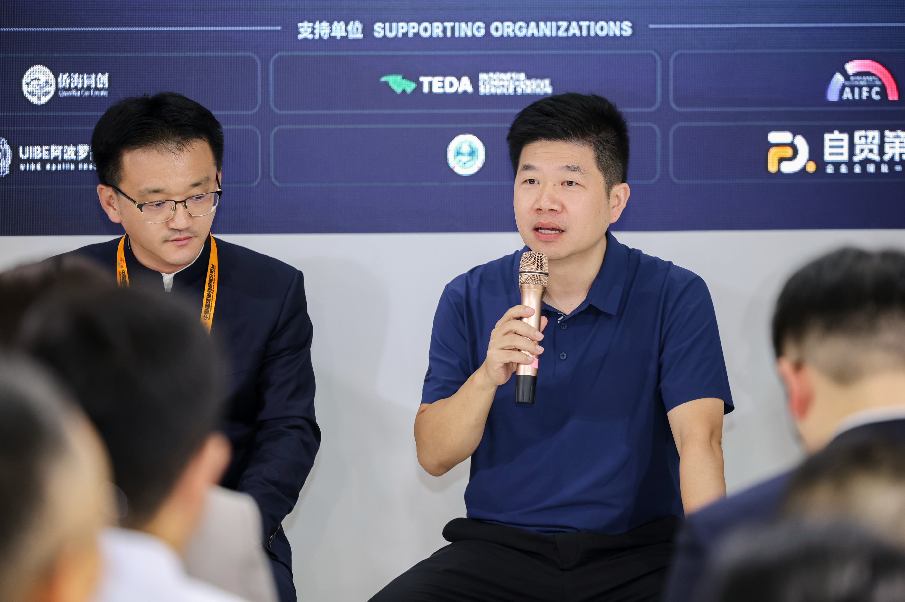
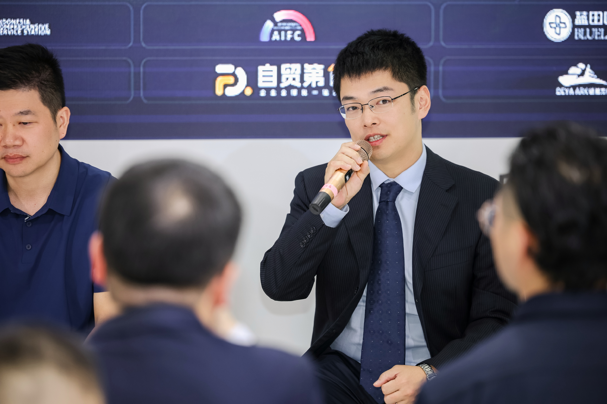
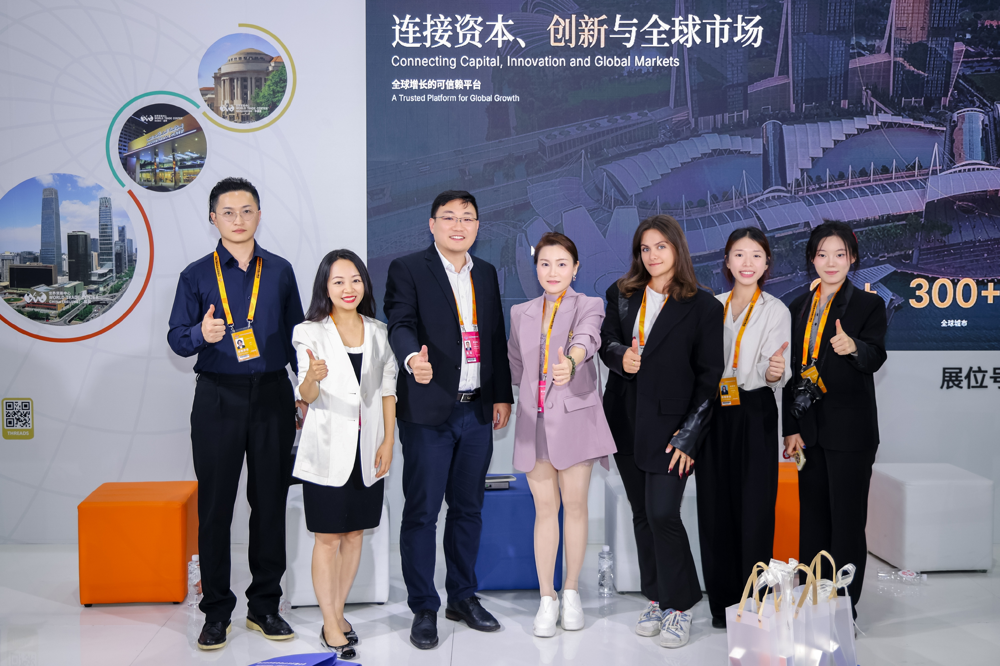

北京，2026年9月11日——2026年中国国际服务贸易交易会（服贸会）期间，新加坡世界贸易中心秘书长兼首席运营官董立鑫，受邀在北京首钢园展馆世界贸易中心协会（WTCA）专属展区，主持题为“侨联搭桥·世贸通衢——生命健康产业的全球化路径与生态构建”的圆桌对话，邀请来自侨联体系、海外服务网络、产业实践与科创一线的五位嘉宾展开深度交流，构成“侨联—产业—海外—平台”四个维度的对话阵容。

本届服贸会由北京市人民政府、中华人民共和国商务部联合主办，是我国服务贸易领域的重要国际开放平台。世界贸易中心协会（WTCA）是服贸会国际合作组织之一，与世界知识产权组织（WIPO）、国际贸易中心（ITC）、世界贸易网点联盟（WTPF）、全球服务贸易联盟（GATIS）并列，自2016年起与服贸会建立长期深度合作，每年通过设立WTCA专属展馆、举办主题论坛及B2B商务对接会等方式深度参展，依托全球近100个国家和地区的城市成员网络，推动服贸会在海外的品牌传播与产业对接。


核心判断：走出去，不等于走进去
董立鑫在开场时表示，自己曾长期任职于一家总部在德国的全球制造企业，深度参与该企业在中国市场的本地化运营与供应链管理，这段经历让他对“产品出海”和“企业真正落地一个陌生市场”之间的差距有切身体会。他指出，这一判断同样适用于今天的大健康产业出海：“大健康出海，产品只是入场券，真正的挑战是进入市场。产品竞争力只是国际化的起点，企业要真正进入一个陌生国家的医疗健康体系，还需要跨过监管准入、市场信任和长期资本这三道门——侨联网络给信任，世贸网络给通道，资本市场给耐心，三者缺一不可。”
“大健康出海，产品只是入场券，真正的挑战是进入市场。产品竞争力只是国际化的起点，企业要真正进入一个陌生国家的医疗健康体系，还需要跨过监管准入、市场信任和长期资本这三道门。”
—— 董立鑫，新加坡世贸 秘书长兼首席运营官侨联资源：把信任变成可落地的连接
北京市侨联常委、大兴区侨联主席、京津冀生命健康产业国际合作联盟理事长许小杰在对话中介绍，联盟依托侨联纽带优势，整合海外侨界资源与国内生命健康产业资源，为企业出海打造政策对接、资源撮合、项目落地的一体化支撑体系。目前已联动80余家海外服务站点，汇聚百余位侨商侨智，充分发挥海外华人华侨融通中外的优势，深化与世界贸易中心协会战略协同，打通资源-渠道-平台联动链路，赋能优质生命健康产业参与全球分工，下一步将聚焦出海痛点本地化合规与市场准入持续发力，推动更多项目落地。

海外通道：印尼与欧洲的一线观察
深耕印尼市场的中国北方（泰达）一站式出海服务基地印尼综合服务站主任谢异表示，很多中国企业看东南亚市场的第一反应是“市场很大”，但真正的困难往往不在于发现市场，而在于进入市场——市场准入流程复杂、本地注册周期长、渠道资源分散，是企业最常遇到的门槛。他表示，市场机会并不等于落地机会。真正的门槛，是企业能不能建立起合规、本地化、渠道和合作伙伴共同组成的落地体系。

法中孵化器联盟协会（AIFC）秘书长孙晓刚则从欧洲市场的角度指出，中欧合作中最稀缺的资源不是资金，而是信任。他表示，侨团在中欧合作中承担着“规则解读者、风险把关人、信用背书人”的多重角色，能够帮助企业跨越合规门槛与信任鸿沟，是企业布局欧洲市场不可忽视的资源。


产业实践：产品好，只是入场券
北京蓝田康泰医疗科技有限公司创始人、董事长芮志福，作为脊柱康复领域企业的创始人，从产业一线视角印证了这一判断：产品竞争力足够，不等于就能真正进入海外市场。蓝田康泰专注于智能化数字化全周期脊柱健康整体解决方案。他表示，与消费电子、工业品出海相比，医疗器械出海的特殊性在于，本地注册与信任建立才是真正的“通行证”。他期待侨联、产业联盟与世贸中心平台三方能够形成合力，帮助更多康复医疗企业解决出海中的注册与信任难题。

北京中科丽健医药科技有限公司执行董事郭亮，从医工深度融合的科创企业视角，分享了原创硬科技出海的真实挑战。中科丽健自主研发的柔性超声导入设备已获多项中国专利授权，相关成果发表于《ACS Nano》等国际知名学术期刊。郭亮表示，这类原创技术走向全球，关键变量往往不在技术本身，而在准入、信任与渠道——产品的科技含量再高，仍然要跨过和其他大健康产品同样的门槛。

收尾：企业出海，越来越难的是“走进去”
董立鑫在总结时表示，短短三十分钟的对话，无论是侨联体系、产业联盟，还是海内外一线观察，以及两位产业实践者的真实反馈，最终都指向同一件事：“企业出海，真正的难点已经越来越不是‘走出去’，而是‘走进去’。尤其是大健康产业，产品可以出口，但企业要真正进入一个国家的医疗健康体系，需要理解规则、建立信任、找到当地合作伙伴，并且有足够长的时间完成这个过程。”他表示，新加坡世贸和WTCA全球网络接下来要做的，不只是告诉企业“哪里有市场”，而是在企业进入陌生市场时，帮助其找到“谁了解规则、谁值得信任、谁能够一起把事情做下去”。信任、通道、耐心资本三件事，也正是新加坡世贸接下来将持续投入的方向。
“企业出海，真正的难点已经越来越不是‘走出去’，而是‘走进去’。尤其是大健康产业，产品可以出口，但企业要真正进入一个国家的医疗健康体系，需要理解规则、建立信任、找到当地合作伙伴，并且有足够长的时间完成这个过程。”
—— 董立鑫，新加坡世贸 秘书长兼首席运营官
据悉，本届服贸会期间，WTCA专属展区还将举办另一场聚焦“东南亚为枢纽·AI与出海 驱动企业增长”的圆桌对话，进一步探讨科技、资本与人才协同下的中国企业全球化实践。在全球经济格局深度调整、存量竞争加剧的背景下，新加坡世贸将继续秉承“链接资本、创新与全球市场”的定位，依托WTCA全球网络优势，为中国企业“引进来”“走出去”提供更广阔的合作空间。
关于世界贸易中心协会
世界贸易中心协会（World Trade Centers Association，简称WTCA）成立于1970年，是一个非营利、非政治性机构，致力于全球各地世界贸易中心的建立和有效运营，以此促进地区经济发展、助推国际贸易和投资。协会总部位于美国纽约，全球网络包括近100个国家和地区的300多个世界贸易中心，向成千上万的企业成员和客户提供服务，帮助他们开拓货源、增加客源并提升投融资机会。
关于新加坡世界贸易中心（WTC Singapore）
新加坡世界贸易中心是世界贸易中心协会（WTCA）在新加坡的官方授权成员，依托WTC ONE Club、GlobalX、WTC Fund三大业务板块，致力于连接全球资本、创新资源与市场机会，为企业提供跨境资源对接与全球化落地支持。